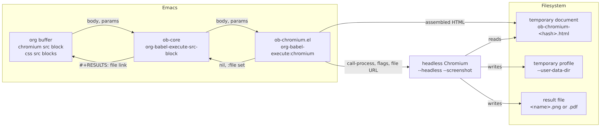
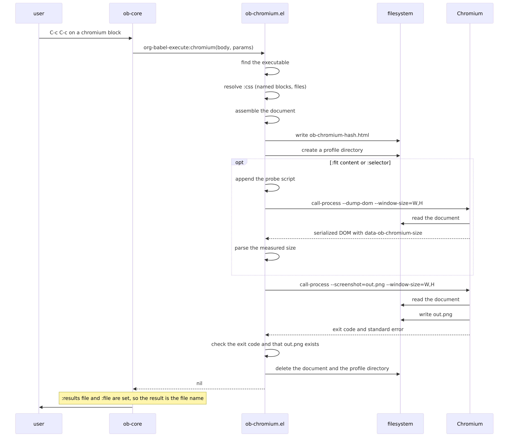
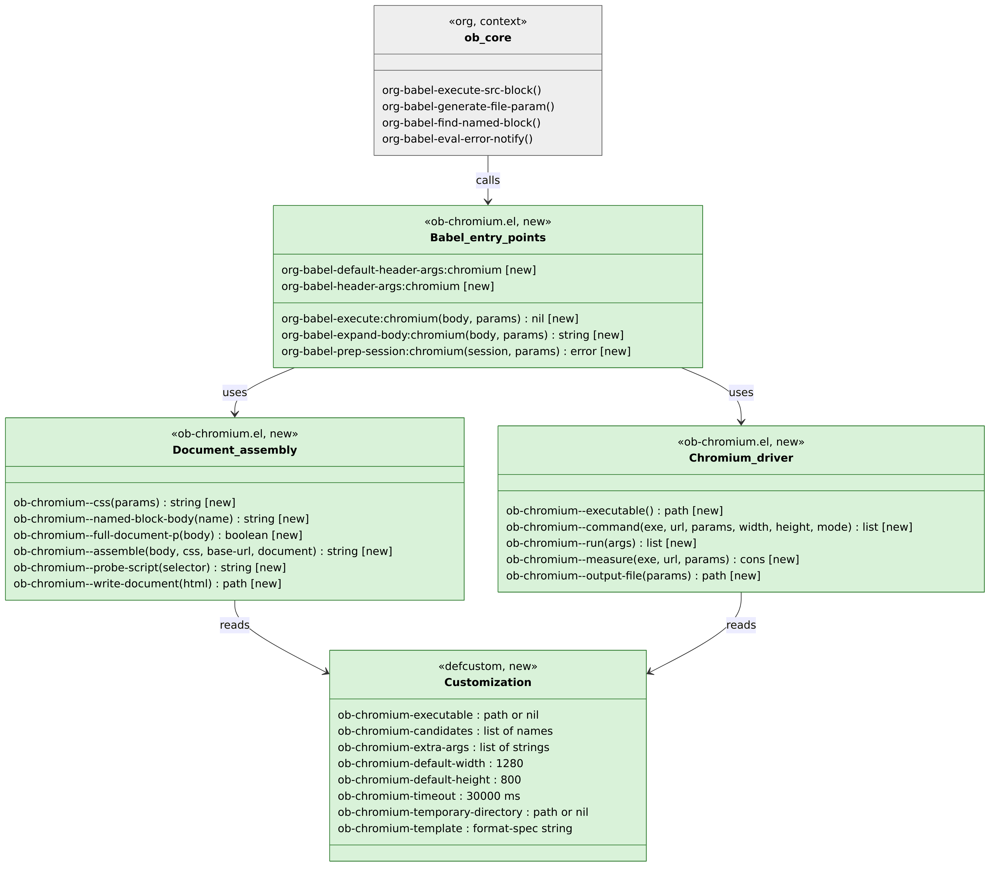
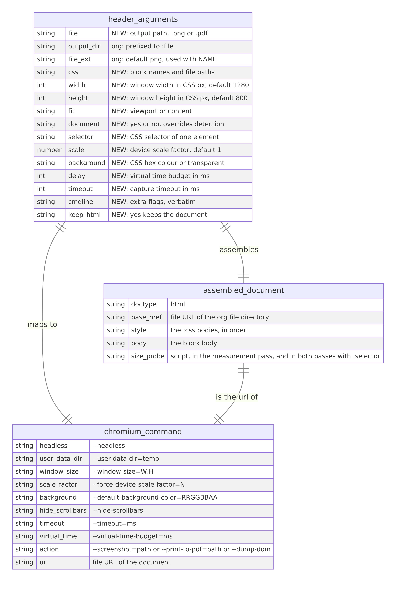

An org-babel language that renders HTML and CSS to a screenshot with headless Chromium
Table of Contents
- Summary
- Background
- Architecture
- Goals and non-goals
- Design
- Language name and editing mode
- Default header arguments
- Where the CSS comes from
- Assembling the document
- Where the temporary files go
- Finding the executable
- The command line
- Running Chromium and reporting errors
- Viewport and content fit
- Output file and format
- Configuration
- Package layout
- What is not covered
- Migration
- Edge cases
- Testing
- Measurement
- Open questions
- Work plan
Summary
ob-chromium is an Emacs package that adds the chromium language to
org-babel. A chromium source block holds HTML. The block can name
CSS source blocks or CSS files in a :css header argument. When the
user executes the block, the package assembles one HTML document from
the body and the CSS, writes the document to a temporary file, starts
headless Chromium on that file with --screenshot, and inserts a
file: link to the PNG as the block’s result. The PNG shows inline in
the org buffer and exports with the document.
The package is one Elisp file with no dependency outside Emacs and
org. It needs a Chromium family browser on the machine. It runs
Chromium once per block with call-process and a fresh profile
directory, so a running browser does not interfere (open questions 2
and 8).
The open questions that shape the design most are the language name (open question 1), how Emacs drives Chromium (open question 2), where the CSS comes from (open question 3), and whether the image follows the viewport or the content height (open question 6).
Background
What exists today
ob-mermaid (https://github.com/arnm/ob-mermaid) is the reference
for this design. It is one file, ob-mermaid.el. It defines
org-babel-default-header-args:mermaid as :results file and
:exports results, reads each header argument from params, builds
one shell command string for mmdc, and runs it with org-babel-eval
with the block body on standard input. It requires :file and returns
nil. Org inserts the link to :file because :results file is set
and :file is present. Its repository also carries test-example.org,
test-init.el, a dev-test.sh script with check, syntax, batch
and interactive commands, and mise.toml for the toolchain.
ob-html-chrome (https://github.com/nikclayton/ob-html-chrome) is the
closest prior art. It defines the html-chrome language, writes the
body to a temporary file beside the org file, runs
chrome --headless --disable-gpu --screenshot=<file> through
org-babel-eval, and returns the file name. It takes the output name
from :file, then from #+NAME, then from the heading text. It
passes extra flags verbatim through :flags. It depends on the f
and s libraries, requires the user to set the Chrome path by hand,
has no CSS support beyond what the body contains, and has not changed
since 2018.
Org itself provides the parts a language needs:
org-babel-generate-file-paramderives:filefrom#+NAMEand:file-extand prefixes:output-dir.org-babel-execute-src-blocksets the result to:filewhen:resultscontainsfile, whatever the execute function returns.org-babel-find-named-blockandorg-babel-get-src-block-infogive the body of a named block in the buffer.org-babel-eval-error-notifyshows standard error in*Org-Babel Error Output*.org-src-lang-modesmaps a language name to the major mode used inorg-edit-special.
Headless Chromium provides the rendering. Since Chrome 112 the
--headless flag runs the full browser without a window. Since Chrome
132 the old headless mode is a separate binary,
chrome-headless-shell. Both take --screenshot=<path>,
--print-to-pdf=<path>, --window-size=W,H, --dump-dom,
--virtual-time-budget=<ms>, --timeout=<ms>,
--default-background-color=RRGGBBAA, --hide-scrollbars,
--force-device-scale-factor=N and --user-data-dir=<dir>. The
--screenshot flag captures the window, not the full page. There is
no command line flag for a full page screenshot.
Why the design changes
There is no maintained org-babel language that renders HTML and CSS
to an image. ob-html-chrome is unmaintained, needs two libraries,
and cannot take CSS from another block. Users who write HTML and CSS
in org for documentation, slides or design notes need an image of the
rendered result in the same document. The package gives that with the
conventions of ob-mermaid, so a user of one package knows how the
other works.
Architecture
Components

The package has one process boundary: Emacs starts Chromium with
call-process and waits for it to exit (open question 2). Emacs and
Chromium share only the filesystem.
Executing a block, end to end

The measurement pass runs only when :fit is content (open
question 6). In the default viewport mode Chromium runs once.
Types and interfaces

Green is new, grey is org code the package calls and does not change. Nothing is changed, because the package is new. The three groups are sections of one file, not separate files (open question 12).
Schema and messages
The package has no database and no network messages. Its two interfaces are the header arguments it reads and the command line it writes.

States
No component changes state. Each execution is one pass from block to file. This section has nothing more to say.
Goals and non-goals
Goals
- Execute a
chromiumsource block and insert afile:link to a PNG that shows the rendered HTML and CSS. - Take CSS from named
csssource blocks in the same buffer and from CSS files, through one header argument. - Work with any Chromium family browser found on
exec-pathor at the usual install paths, with no configuration when one is installed. - Depend on nothing outside Emacs 27.1 and org 9.4.
- Follow the conventions of
ob-mermaid::results file,:exports results,:cmdlinepass-through, onedefcustomfor the executable path. - Report a Chromium failure with Chromium’s standard error, and stay silent on success.
- Carry the test harness of
ob-mermaid: a test org file, a test init file, a script withcheck,syntax,batchandinteractivecommands, and CI.
Non-goals
- Screenshots of remote URLs. The body of the block is the content.
- Element capture by CSS selector in the first version (open question 10).
- Asynchronous execution. Chromium runs in about 1 s and the user waits.
- Sessions.
org-babel-prep-session:chromiumsignals an error. :varsubstitution into the HTML. Noweb references work because org expands them before the execute function runs.- Remote files over Tramp.
- Browsers outside the Chromium family.
- A live preview or a persistent browser process.
Design
Language name and editing mode
The language is chromium. A block starts with
#+begin_src chromium (open question 1). On load the package adds
("chromium" . mhtml) to org-src-lang-modes, so org-edit-special
opens the body in mhtml-mode with HTML, CSS and JavaScript
highlighting. The language is not html, because an
org-babel-execute:html function would make C-c C-c on every
existing html block try to render it, and every such block would
then need :file.
Default header arguments
(defvar org-babel-default-header-args:chromium '((:results . "file") (:exports . "results") (:file-ext . "png")))
:results file makes org use :file as the result (What exists
today). :file-ext png lets a named block omit :file: org derives
<name>.png in :output-dir (open question 5). The package declares
every header argument it reads in org-babel-header-args:chromium,
so completion and org-lint know them.
Where the CSS comes from
The :css header argument is a list of items separated by spaces
(open question 3). The package resolves each item in order:
- When a source block in the current buffer has that
#+NAME, the item is that block’s body. The block’s language is not checked, so ascssblock that the user has compiled by other means still works as long as its body is CSS. - Otherwise, when a file with that name exists relative to
default-directory, the item is the file’s contents. - Otherwise the package signals
user-errorwith the item name and stops before Chromium starts.
The package joins the resolved bodies with a newline, in the order
given, and puts them in one <style> element. It reads the file or
block, it does not link to it, so the temporary document has no
dependency on where it is written. The :css header argument can be
set once for a subtree or a file with #+PROPERTY: header-args:chromium :css theme.
A block with a <style> element in its body keeps it. Noweb
references, <<theme>> in the body with :noweb yes, also work and
need nothing from the package.
Assembling the document
ob-chromium--full-document-p returns true when the body, after
leading whitespace, starts with <!doctype or <html in any letter
case (open question 4).
When the body is a fragment, the package fills ob-chromium-template
with format-spec:
(defcustom ob-chromium-template "<!DOCTYPE html> <html> <head> <meta charset=\"utf-8\"> <base href=\"%u\"> <style> %c </style> </head> <body> %b </body> </html>" "Document the package wraps around a fragment. %u is the file URL of the org file's directory, %c the CSS, %b the body.")
When the body is a full document, the package inserts
<base href> and the <style> element before the first </head>.
When there is no </head>, it inserts them after the first <html ...>
tag. The body is otherwise unchanged.
<base href> points at default-directory of the org buffer, so an
<img src“figure.png”>= in the body resolves beside the org file,
wherever the temporary document is written (open question 7).
org-babel-expand-body:chromium returns the assembled document. The
user sees it with C-c C-v v, org-babel-expand-src-block. That is
the first debugging step when a render is wrong.
Where the temporary files go
The package writes the document to ob-chromium-<hash>.html in
ob-chromium-temporary-directory when that is set, and otherwise in
org’s org-babel-temporary-directory (open question 7). The hash is
the first 8 characters of the SHA-1 of the assembled document. The
package creates a profile directory ob-chromium-profile-<hash> in
the same place and passes it as --user-data-dir (open question 8).
Both are deleted after Chromium exits, on success and on failure.
With :keep-html yes the package copies the document beside the
output file as <output>.html before deleting the temporary one.
A snap installed Chromium cannot read /tmp of the host. Such a user
sets ob-chromium-temporary-directory to a directory under $HOME
that does not start with a period. The README says so (Edge cases).
Finding the executable
ob-chromium--executable returns, in order:
ob-chromium-executablewhen it is set. When it is set and the file is not executable,user-errornames the path.- The first name in
ob-chromium-candidatesthatexecutable-findresolves. The default list ischromium,chromium-browser,google-chrome,google-chrome-stable,chrome,chrome-headless-shell,brave-browser,microsoft-edge. - The first entry in
ob-chromium-candidatesthat is an absolute path and exists. The default list ends with the macOS application binaries of Chrome, Chromium, Brave and Edge under/Applications/*.app/Contents/MacOS/. - Otherwise
user-errorsays that no Chromium was found and names the variable.
The result is cached for the Emacs session in a variable, and the
cache is cleared when the user sets ob-chromium-executable through
Customize (open question 13).
The command line
The package builds a list of arguments and runs it with
call-process, not through a shell (open question 2). Paths with
spaces need no quoting. The list is:
| Argument | Source |
|---|---|
--headless |
always |
--disable-gpu |
always |
--hide-scrollbars |
always |
--user-data-dir=<profile> |
always (open question 8) |
--window-size=<W>,<H> |
:width, :height, or the two defcustom defaults |
--force-device-scale-factor=<N> |
:scale, when given (open question 14) |
--default-background-color=<RRGGBBAA> |
:background, when given |
--timeout=<ms> |
:timeout, else ob-chromium-timeout |
--virtual-time-budget=<ms> |
:delay, when given |
ob-chromium-extra-args |
each element, verbatim |
:cmdline |
split with split-string-and-unquote, verbatim |
--screenshot=<out> or --print-to-pdf=<out> or --dump-dom |
the mode (open question 9) |
file://<document> |
the temporary document |
:background accepts transparent, which maps to 00000000, a
6 digit hex colour, which gets FF appended, and an 8 digit hex
colour, which passes through. A leading # is removed.
The output path passed to Chromium is absolute. Chromium resolves a
relative path against its own working directory, and call-process
runs it in default-directory, but an absolute path removes the
dependency. The directory of the output file is created when it does
not exist.
Running Chromium and reporting errors
ob-chromium--run calls call-process with standard output to one
temporary buffer and standard error to another, and returns the exit
code and both strings. Standard error is kept for the error message
only. Chromium writes warnings to standard error on every run, so the
package shows nothing on success (open question 11).
The execution fails when the exit code is not 0, or when the output
file does not exist or is empty after Chromium exits. In both cases
the package calls org-babel-eval-error-notify with the exit code and
the standard error text, which opens *Org-Babel Error Output*, and
then signals user-error with a one line summary. The temporary
files are deleted in an unwind-protect clean-up form, so a C-g
during the run leaves nothing behind.
Viewport and content fit
:fit is viewport by default (open question 6). The image is
:width by :height CSS pixels, times :scale. Content below the
window is not in the image.
With :fit content the package runs Chromium twice. The first run
uses the same document plus one script appended before </body>:
<script> addEventListener("load", function () { │ var d = document.documentElement; │ d.setAttribute("data-ob-chromium-size", │ │ │ │ │d.scrollWidth + "x" + d.scrollHeight); }); </script>
The first run passes --dump-dom instead of --screenshot, with the
same window size. Chromium prints the serialized DOM after the load
event, so the attribute is in the output. The package reads the
height from it. The second run passes --screenshot with
--window-size=<W>,<measured height>. The width stays :width,
because scrollWidth of the root element is never less than the
window width, so a content width cannot be measured this way. When
the attribute is missing from the output, the package falls back to
:height and continues. Content fit costs one more Chromium start,
about 1 s (Measurement).
Output file and format
The output file is :file when given, prefixed by :output-dir
by org. A named block without :file gets <name>.png from
:file-ext. An unnamed block without :file gets user-error with
org’s own message, “did you forget to name a block?” (open question
5).
The extension picks the Chromium action (open question 9):
| Extension | Action |
|---|---|
.png |
--screenshot=<out> |
.pdf |
--print-to-pdf=<out> --no-pdf-header-footer |
| anything else | user-error before Chromium starts |
Chromium writes PNG from --screenshot whatever the extension says,
so the package refuses other image extensions rather than write a PNG
under a wrong name. For PDF, :fit is ignored and the page size
comes from the document’s @page rule or Chromium’s default.
Configuration
| Variable | Default | Purpose |
|---|---|---|
ob-chromium-executable |
nil |
Path to the browser. nil searches ob-chromium-candidates. |
ob-chromium-candidates |
the list under Finding the executable | Names and absolute paths tried in order |
ob-chromium-extra-args |
nil |
Flags added to every run, such as --no-sandbox in a container |
ob-chromium-default-width |
1280 | Window width when :width is absent |
ob-chromium-default-height |
800 | Window height when :height is absent |
ob-chromium-timeout |
30000 | --timeout in ms when :timeout is absent |
ob-chromium-temporary-directory |
nil |
Where the document and profile go. nil uses org’s directory |
ob-chromium-template |
the string under Assembling the document | Wrapper for a fragment |
All variables are in the org-babel customization group, as in
ob-mermaid.
Package layout
| File | Purpose |
|---|---|
ob-chromium.el |
The package. Header with Package-Requires: ((emacs "27.1") (org "9.4")) |
ob-chromium-test.el |
ERT tests, unit and integration |
test-example.org |
One block per feature, executed by the batch test |
test-init.el |
Minimal init that loads the package and the test file |
dev-test.sh |
check, clean, syntax, batch, interactive, all, as in ob-mermaid |
.github/workflows/test.yml |
CI |
README.org |
Setup, header arguments, customization, the snap note, inline images |
LICENSE |
GPL-3.0, as org requires for a babel language |
designs/ob-chromium.org |
This document |
The MELPA recipe is
(ob-chromium :fetcher github :repo "jamesgornet/ob-chromium") and is
submitted in step 10 of the Work plan.
What is not covered
- The package does not render the image inline by itself. Org does
that when
org-startup-with-inline-imagesis set or the user runsorg-display-inline-images. The README gives the usual hook,(add-hook 'org-babel-after-execute-hook #'org-redisplay-inline-images). - The package does not install Chromium.
- The package does not confirm evaluation. Org asks through
org-confirm-babel-evaluateas for every language, and the README shows how to allowchromiumblocks without a prompt.
Migration
Nothing is implemented, so nothing moves. A user of ob-html-chrome
changes these:
In ob-html-chrome |
In ob-chromium |
|---|---|
#+begin_src html-chrome |
#+begin_src chromium |
org-babel-html-chrome-chrome-executable |
ob-chromium-executable, optional |
:file name without extension |
:file name.png, or #+NAME: name and no :file |
:flags "--window-size=320,240" |
:width 320 :height 240 |
:flags "--force-device-scale-factor=2" |
:scale 2 |
:flags for anything else |
:cmdline |
:url |
not supported |
:exports both by default |
:exports results by default |
| temporary file beside the org file | temporary file in org’s directory, <base href> set |
A user of ob-mermaid finds :file, :width, :height, :scale,
:cmdline and :results file with the same meaning.
:background-color is :background here, and :css-file is :css.
Edge cases
- A browser from the same binary is already running. Chromium gets
its own
--user-data-dir, so it does not hand the URL to the running instance and exit (open question 8). - Chromium is a snap. It cannot read
/tmp, so the run fails with a file not found error from Chromium. The error output names the document path. The user setsob-chromium-temporary-directoryto a directory under$HOMEthat does not start with a period. The README documents this (open question 7). - The body is a full document. It is not wrapped.
<base href>and the<style>element go before</head>, or after<html>when there is no</head>(open question 4). - The body is empty or whitespace.
user-errorbefore Chromium starts. :cssnames something that is neither a block nor a file.user-errornames the item (open question 3).:cssnames a block in another file. Not supported. Only the current buffer is searched. The user uses a file path instead.- The body references
figure.pngbeside the org file.<base href>makes Chromium read it from there. The document itself can be in/tmp(open question 7). - The body loads a web font or a script from the network. Chromium
has network access and the load event waits for them.
--timeoutbounds the wait atob-chromium-timeout, 30 s by default. After it, Chromium captures what it has. - The body draws with JavaScript after a timer.
:delay <ms>passes--virtual-time-budget, which runs timers ahead before capture. - Content is taller than
:heightin viewport mode. The image stops at:height. No scrollbar is drawn (open question 6). - Content is wider than
:widthin content mode. The width stays:widthand the overflow is not in the image (open question 6). - The measurement pass gives no size attribute, because a script in
the body threw before the load event or the DOM dump was cut. The
package uses
:heightand continues. Nothing is reported. - Chromium exits 0 but writes no file.
user-errorwith Chromium’s standard error in*Org-Babel Error Output*(open question 11). - Chromium exits non-zero. Same (open question 11).
- The user presses
C-gduring the run.call-processis interrupted. The clean-up form deletes the document and the profile. :fileends in.jpgor.svg.user-errorbefore Chromium starts (open question 9).:fileis in a directory that does not exist. The package creates it.- A path contains a space.
call-processtakes a list, so nothing is quoted or split (open question 2). - Emacs runs as root in a container. Chromium refuses to start
without
--no-sandbox. The user adds it toob-chromium-extra-args. The README says so. :cache yesand a:cssblock changes. Org hashes the body and the header arguments, not the body of the named CSS block, so the cached result is stale. The user re-runs withC-u C-c C-c. The README says so (open question 3).:background transparentand the body sets a body background. The image is opaque where the body paints. The template sets no background, so a fragment with no background rule is transparent.- Export with
ox-htmlorox-latex. Org executes the block during export withdefault-directoryset to the org file’s directory, and the link to the PNG is exported as an image. - Windows. The file URL is built with
browse-url-file-urlwhen it exists (Emacs 29) and withfile:///andurl-hexify-stringotherwise. Not tested in the first version. CI runs Linux and macOS. - The org buffer visits a remote file over Tramp.
user-error.
Testing
| Level | Check |
|---|---|
| Static | byte-compile-file with no warnings, checkdoc, package-lint |
| Unit, ERT | ob-chromium--full-document-p on fragments, documents, letter case, leading whitespace |
| Unit, ERT | ob-chromium--assemble: fragment wrapped, full document gets <base> and <style> before </head>, without </head> |
| Unit, ERT | ob-chromium--css: named block, file, both in order, missing item signals user-error |
| Unit, ERT | ob-chromium--command: every header argument appears as the right flag, :background forms, defaults |
| Unit, ERT | ob-chromium--output-file: :file, :output-dir, #+NAME with :file-ext, .pdf, .jpg refused |
| Unit, ERT | ob-chromium--measure parses data-ob-chromium-size from a canned DOM dump, falls back when absent |
| Integration | Skipped with ert-skip when no executable is found. Otherwise: a block renders to a PNG whose IHDR says 1280x800 |
| Integration | :scale 2 gives 2560x1600. :fit content on a 2000 px tall body gives a height of 2000 or more |
| Integration | :css from a named block changes a pixel colour read from the PNG |
| Integration | .pdf output starts with %PDF |
| Integration | A failing run, :cmdline --bad-flag or an unreadable path, signals user-error and leaves no temporary files |
| Batch | dev-test.sh batch executes every block of test-example.org in emacs --batch and checks each output file |
| CI | GitHub Actions: Emacs 27.2, 28.2, 29.4 and 30.1 on Ubuntu, 30.1 on macOS, Chrome from browser-actions/setup-chrome |
| Manual | dev-test.sh interactive: C-c C-c on each block, inline image shows, C-c C-v v shows the document |
PNG dimensions are read from the IHDR chunk, bytes 16 to 23 of the file, so the integration tests do not need an Emacs built with image support.
Measurement
What to measure: the wall time of one block in viewport mode and in
content mode, and the size of the PNG at :scale 1 and :scale 2.
The time decides the default of :fit (open question 6) and whether
a persistent browser is worth a later version.
Results
Not measured yet. Nothing is implemented. Step 11 of the Work plan
records 10 runs of each case with benchmark-run on this machine and
on a Mac, with the Chromium version and the commit.
Benchmarks
None yet.
Expected values
| Case | Expected |
|---|---|
| Viewport mode, 1280x800, local content | 0.5 s to 1.5 s, almost all Chromium start |
| Content mode | twice the viewport time |
| PNG, 1280x800, text on white, scale 1 | 50 KB to 200 KB |
| PNG, scale 2 | about 3 times the scale 1 size |
| Profile directory per run | 1 MB to 10 MB, deleted after the run |
Open questions
- What is the language name?
- Option A
chromium.#+begin_src chromium. Editing mode set throughorg-src-lang-modes. Matches the package name, asmermaidmatchesob-mermaid.- Option B
html. Any existinghtmlblock becomes executable andC-c C-con it needs:file. Breaks documents that usehtmlblocks for display only.- Option C
html-chromiumorhtml-chrome. Says what the body is, asob-html-chromedid. Longer to type.- Recommendation
- A. The body is HTML, but the language name is the tool, as for every other babel language that renders.
- (no term)
- The body is written for A.
- (no term)
- TODO Decide.
- How does Emacs drive Chromium?
- Option A
- One
call-processper block with--headlessand--screenshot. No dependency. About 1 s per block for the browser start. Full page capture needs a second run. - Option B
- The Chrome DevTools Protocol over
--remote-debugging-pipeor a port. One persistent browser,Page.captureScreenshotwithcaptureBeyondViewport, element clipping. Needs a WebSocket client and JSON handling in Elisp, and a process to manage. - Option C
- A Node script with Puppeteer, as
ob-mermaiddepends onmmdc. Full page and element capture come for free. Needs Node and a package install. - Option D
wkhtmltoimage. Old WebKit, unmaintained.- Recommendation
- A. It meets the goals with zero dependencies. B is the path for a later version if Measurement shows the start time matters.
- (no term)
- The body is written for A.
- (no term)
- TODO Decide.
- Where does the CSS come from?
- Option A
:csstakes a list of named blocks and file paths, inlined into one<style>element.- Option B
- Noweb only.
<<theme>>in the body with:noweb yes. Nothing to build, but the user writes the<style>element and the reference by hand in every block. - Option C
:css-filefor files only, asob-mermaid. A CSS block in the buffer must be tangled first.- Recommendation
- A. B keeps working alongside it.
- (no term)
- The body is written for A.
- (no term)
- TODO Decide.
- How does the package know whether to wrap the body?
- Option A
- Detect: a body that starts with
<!doctypeor<htmlis a full document. - Option B
- A header argument,
:document yes, with no detection. Explicit, one more thing to type. - Option C
- Both, with the header argument as the override.
- Recommendation
- A. The two prefixes cover every full document
in practice, and
C-c C-v vshows what was decided. - (no term)
- The body is written for A.
- (no term)
- TODO Decide.
- Is
:filerequired?- Option A
- Required, as in
ob-mermaid. - Option B
:file, else#+NAMEplus.pngthrough org’s:file-extmechanism, else org’s own error.- Option C
- As B, and an unnamed block without
:filegetsob-chromium-<hash>.png. - Recommendation
- B. It uses what org already does and the error message is org’s. C leaves hash named files behind when the body changes.
- (no term)
- The body is written for B.
- (no term)
- TODO Decide.
- What is the default of
:fit?- Option A
viewport. One Chromium run. The image is:widthby:height.- Option B
content. Two runs. The height follows the content. The width stays:width.- Recommendation
- A, until Measurement gives the cost of the
second run. A snippet that is a card or a table is often
shorter than 800 px, and
:fit contentis one header argument away. - (no term)
- The body is written for A.
- (no term)
- TODO Decide.
- Where is the temporary document written?
- Option A
org-babel-temporary-directory, with<base href>pointing at the org file’s directory. Nothing is written beside the user’s file. Fails for a snap Chromium unlessob-chromium-temporary-directoryis set.- Option B
- Beside the org file, as
ob-html-chromedoes. Relative paths work with no<base>. A file appears in the user’s directory for the duration of the run, and stays after a crash. Syncing folders such as Dropbox pick it up. - Recommendation
- A, with the
defcustomfor snap users. - (no term)
- The body is written for A.
- (no term)
- TODO Decide.
- Does every run get its own
--user-data-dir?- Option A
- Yes. A temporary profile, deleted after the run. A running browser of the same binary does not take over the URL. Costs a few MB of writes per run.
- Option B
- No. Fewer writes. A run while the browser is open opens the file in that browser and the screenshot never appears.
- Recommendation
- A.
- (no term)
- The body is written for A.
- (no term)
- TODO Decide.
- Is PDF output in scope?
- Option A
- Yes.
:file name.pdfpasses--print-to-pdf. About 10 lines. - Option B
- No. PNG only. Other extensions are refused.
- Recommendation
- A. The flag exists and the extension already has to be checked.
- (no term)
- The body is written for A.
- (no term)
- TODO Decide.
- Is element capture,
:selector .card, in the first version?- Option A
- Yes, through a script in the measurement pass that
replaces the body’s children with the selected element and
measures it. Works only with
:fit content. - Option B
- Not in the first version. Listed as a later version.
- Recommendation
- B. It depends on
:fit contentand on Measurement. - (no term)
- The body is written for B.
- (no term)
- TODO Decide.
- What does the user see on failure and on success?
- Option A
- On failure, standard error in
*Org-Babel Error Output*and a one lineuser-error. On success, nothing. Chromium’s warnings are discarded. - Option B
- Standard error always shown, as
org-babel-evaldoes. Chromium prints warnings on every run, so a buffer pops up after every block. - Recommendation
- A.
- (no term)
- The body is written for A.
- (no term)
- TODO Decide.
- One file or several?
- Option A
- One file,
ob-chromium.el, with three commented sections. MELPA single file recipe. Asob-mermaid. - Option B
ob-chromium.elplusob-chromium-driver.el. Cleaner tests, two files to load.- Recommendation
- A. The package is under 400 lines.
- (no term)
- The body is written for A.
- (no term)
- TODO Decide.
- What are the minimum versions?
- Option A
- Emacs 27.1 and org 9.4.
mhtml-mode,format-spec, lexical binding. CI runs 27.2 as the oldest. - Option B
- Emacs 29.1 and org 9.6.
browse-url-file-urlandorg-babel-temp-stable-filewithout fallbacks. - Recommendation
- A. The fallbacks are two short functions.
- (no term)
- The body is written for A.
- (no term)
- TODO Decide.
- What is the default device scale factor?
- Option A
- 1. The PNG has as many pixels as CSS pixels. Small files. Soft on a HiDPI screen when org shows the image at its pixel size.
- Option B
- 2. Sharp on HiDPI, about 3 times the file size,
and org shows it twice as large unless
#+ATTR_ORG: :widthis set. - Recommendation
- A, because
ob-mermaidandob-html-chromedo the same and the user sets:scale 2per block or per file. - (no term)
- The body is written for A.
- (no term)
- TODO Decide.
Work plan
The steps are in order. Each step is one commit on main in
ob-chromium, until the first tag.
- Repository skeleton:
ob-chromium.elwith the header,Package-Requires, thedefcustomvariables, the default header arguments andorg-babel-header-args:chromium, theorg-src-lang-modesentry, andorg-babel-prep-session:chromium.LICENSE,.gitignore, an emptyREADME.org. ob-chromium--executablewith the candidate search and the session cache. Unit tests with a fakeexec-path.- Document assembly:
ob-chromium--full-document-p,ob-chromium--css,ob-chromium--named-block-body,ob-chromium--assemble,org-babel-expand-body:chromium. Unit tests. ob-chromium--command,ob-chromium--output-file,ob-chromium--runandorg-babel-execute:chromiumin viewport mode, with the temporary document and profile, the clean-up form and error reporting. Unit tests for the command. Integration tests, skipped without Chromium.:fit content: the probe script,ob-chromium--measure, the second run and the fallback. Unit test on a canned DOM dump. Integration test.- PDF output through the extension. Integration test.
test-example.orgwith one block per header argument,test-init.el,dev-test.shported fromob-mermaidwith the file list of the new test document.- CI:
.github/workflows/test.ymlwith the Emacs matrix,browser-actions/setup-chrome, static checks, ERT and the batch test. README.org: setup, header arguments, customization, theob-html-chromemigration table, the snap note,--no-sandbox, inline images,org-confirm-babel-evaluate.- Tag
0.1.0. Submit the MELPA recipe. - Measurement: 10 runs per case of the Expected values table on this machine and a Mac. Record under Results. Revisit open question 6 with the figures.